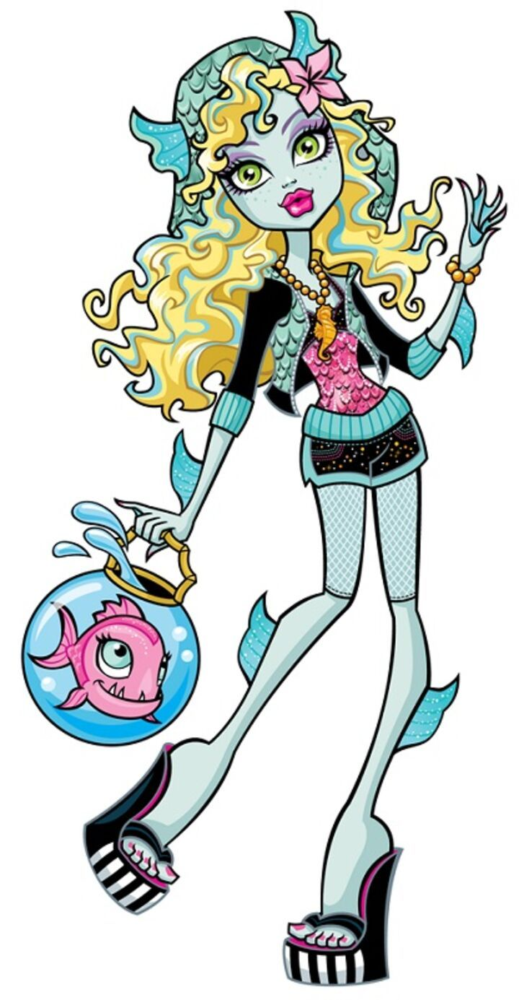
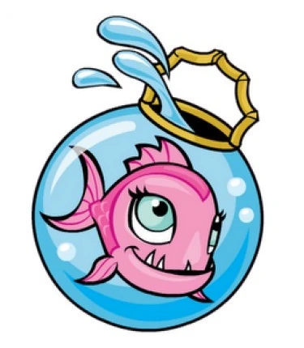

Lagoona Blue

Lagoona Blue is a 2010-introduced and all-around character. She and her younger siblings are an unusual kind of sea monster, as they are the offspring of a sea monster and an ocean nymph. Lagoona is a student at Monster High, having come all the way from the Great Scarrier Reef to expand her horizons. And she's done so admirably. If there is one person in the entire school who could befriend anyone, it's Lagoona. She is patient, kind, and considerate, but does not sugarcoat her message or allow anyone to walk over her. This, along with her considerable skill, is why she's been chosen as the captain of the Swim Team. The one exception to her no-nonsense attitude is her boyfriend, Gillington Webber. She gives him leeway beyond her standards despite the harm it does her because she is aware that his home situation is far from ideal. She is not happy with the situation, but she knows she would also not be happy without him.

Neptuna is Lagoona Blue's pet piranha. Lagoona carries her to school in a fishbowl purse.
Where to find us
4500 N Access Rd
Chattanooga, TN 37415
(142)305-6500